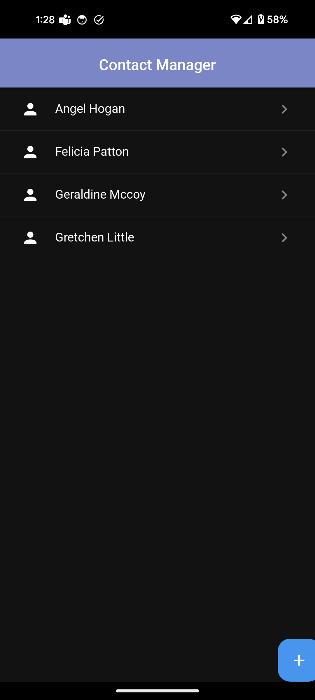

Deploying your Python application to Android
Shyamnath Premnadh


Hi, there üëã
Shyamnath Premnadh aka Shyam
Qt for Python
Senior Software Engineer @ TQtc
Why is Android an important platform ?ü¶æ

Is Python a good alternative for Java/Kotlin for Android development? ü§î
Currently, NO

Python üö´ Android
- No official support for Android in CPython
- No native support for Python with Android SDK
- The app should bundle the Python binaries
Python ❤️ Android
- No official support for Android in CPython -
PEP 738: Adding Android as a supported platform - Malcolmn Smith - No native support for Python with Android SDK - Toga, PySide6, PyQt6
- The app should bundle the Python binaries
GUI frameworks with Android support
- Kivy
- Flet
- PySide6
- PyQt6
- Toga
GUI frameworks with Android support
-
Kivy

-
Flet

- PySide6
- PyQt6
- Toga
Contact Manager Applicationüì±
- Concise understanding of User Interaction
- Uses essential GUI components
- Simple Data Model
- Event Handling
- Navigation and Layout
Flet
- Since 2023
- Server-Driven UI framework based on Flutter
- Minimal API - Fully in Python
- Deploying as a web app on the browser or a progressive web app (PWA)
- Active and responsive community
Contact Manager Application - Flet

Ease of Development üíª
How to deploy?
- Prerequisites - Flutter SDK
- Run the command
flet build apk/aab
apk (Android Application Package)- Packaging format
aab (Android App Bundle)- Publishing format
Pros and Cons - Flet
Pros
- More modern UI
- Easy to get started with
- Minimal API, but hightly customizable
- Cross-platform + WebAssembly
- Super active and responsive community
Cons
- Still very new
- Limited resources online
- No visual designer
- Not hardware access
- Not as mature as PySide6 and Kivy
- No localization
Kivy
- Since 2012
- Two ways to create GUI
- Python code
- Kv language
- More suited for games than traditional applications
- KivyMD for Material Design
Contact Manager Application - Kivy

Ease of Development üíª
.kv file
<.AddContactContent>:
orientation: 'vertical'
...
MDTextField:
hint_text: "Name"
MDTextField:
hint_text: "Address"
MDTextField:
hint_text: "City"
MDTextField:
hint_text: "Mobile"
MDFloatingActionButton:
icon: "plus" # comes bundled with icons
background_color: 1, 0, 1, 0
pos_hint: {'center_x': .95, 'center_y': .5}
on_release: app.add_contact_dialog()
.py file
class ContactManagerApp(MDApp):
...
def add_contact_dialog(self):
self.dialog = MDDialog(title="Add Contact", type="custom", content_cls=AddContactContent(),
buttons=[MDFlatButton(text="CANCEL", theme_text_color="Custom",
text_color=self.theme_cls.primary_color,
on_release=lambda x: self.dialog.dismiss()),
MDFlatButton(text="OK", theme_text_color="Custom",
text_color=self.theme_cls.primary_color,
on_release=lambda x: self.add_contact()),],
)
self.dialog.open()
How to deploy?
- Prerequisites
- buildozer and python-for-android (kivy)
- Main entry point is `main.py`
buildozer init
buildozer android debug # creates apk
Pros and Cons - Kivy
Pros
- KivyMDBuilder - Interactive tool
- kv language is easy to learn
- Both PySide6 and Flet uses buildozer
- More modules than Flet
- Active community
Cons
- Not as modern as Flet even with KivyMD
- Not as mature as Qt
- Not ideal for Desktop platforms
- Limited resources as compared to PySide6
- Incomplete API reference
- Confusing Widget names. eg. Accordion
PySide6
- Official bindings for the Qt framework (since 1995 üòÆ)
-
Two ways to create GUIs
- Qt Widgets - Python and C++
- Qt Quick - QML and Python/C++
- Visual Designers
- Qt Widgets - Qt Designer
- Qt Quick - Qt Design Studio
Contact Manager Application - PySide
Ease of Development üíª
ColumnLayout {
id: grid
...
TextField {
id: fullName
focus: true
Layout.fillWidth: true
Layout.minimumWidth: grid.minimumInputSize
Layout.alignment: Qt.AlignLeft | Qt.AlignBaseline
placeholderText: qsTr("Full Name")
}
TextField {
id: address
...
placeholderText: qsTr("Address")
}
...
}
Dialog {
id: dialog
function createContact() {
form.fullName.clear();
...
dialog.title = qsTr("Add Contact");
dialog.open();
}
contentItem: ContactForm { id: form}
}
RoundButton {
text: qsTr("+")
highlighted: true
anchors.margins: 10
anchors.right: parent.right
anchors.bottom: parent.bottom
onClicked: {
currentContact = -1
contactDialog.createContact()
}
}
Role of Python?
Loading QML files from Python
if __name__ == '__main__':
app = QGuiApplication(sys.argv)
engine = QQmlApplicationEngine()
engine.addImportPath(Path(__file__).parent)
engine.loadFromModule("Contact", "ContactList") #loads ContactList.qml
if not engine.rootObjects():
sys.exit(-1)
ex = app.exec()
del engine
sys.exit(ex)
contactmodel.py
QML_IMPORT_NAME = "Backend"
QML_IMPORT_MAJOR_VERSION = 1
@QmlElement
class ContactModel(QAbstractListModel):
...
contactview.qml
import Backend
ListView {
id: listView
....
model: ContactModel {
id: contactModel
}
....
}
How to deploy?
- Prerequisites
- Unix host system
- Built custom Android wheels (Soon to go away)
- buildozer and python-for-android (kivy)
- Main entry point is `main.py`
pyside6-android-deploy --wheels-pyside=`path-to-android-wheel` --wheel-shiboken=`path-to-android-wheel`
Pros and Cons - PySide6
Pros
- More features and modules than Kivy and Flet
- Lot of resources
- Big and active community
- Easy switch to C++ - high performance
- Lot of tools eg: Qt Designer, Qt Design Studio etc
Cons
- Steep learning curve
- No iOS and WebAssembly support
- Needs a Unix host system
Python Packages Support
Pure Python Packages - Platform Independent
Python Packages Support
Pure Python Packages - Platform Independent
What about Native Python Packages?
Python Packages Support
What about Native Python Packages?
Other Concerns
| Flet | Kivy | PySide6 | |
|---|---|---|---|
| Python Version | 3.11 | 3.11 | 3.11 |
| Android NDK Version | r23b | r25b | r26b |
| Licenses | Apache 2.0 | MIT | LGPLv3/GPLv3 and Commercial |
| App Size |
Conclusion üèÅ
Deploying your Python application to Android
Shyamnath Premnadh